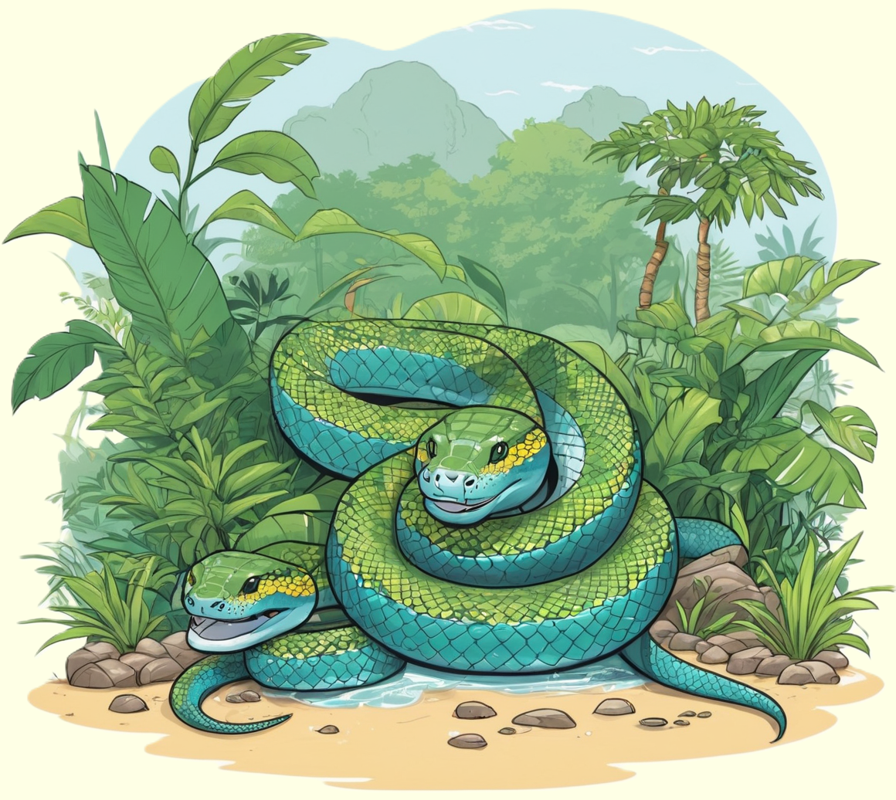

Die Anakonda, eine faszinierende Riesenschlange, beeindruckt mit ihrer beeindruckenden Größe und ihrer geschickten Jagdtechnik.
Entdecke die spannende Welt dieser Reptilien und erfahre, wie sie in den tropischen Gewässern Südamerikas leben.

Mächtige Bewohner der tropischen Gewässer
Anakondas, auch als Wasserschlangen oder Süßwasserschwimmer bekannt, gehören zu den größten Schlangenarten der Welt und sind in den tropischen Regenwäldern Südamerikas beheimatet. Die Grüne Anakonda (Eunectes murinus) ist die größte und bekannteste Art dieser Familie. Mit beeindruckenden Längen von bis zu sieben Metern sind Anakondas für ihre Größe und Kraft berühmt. Ihr Körperbau ist perfekt an das Leben im Wasser angepasst. Sie haben eine schlanke und muskulöse Gestalt mit einer speziellen Kopfform, die es ihnen ermöglicht, ihre Beute im Wasser effektiv zu erfassen.
Anakondas sind hervorragende Schwimmer und verbringen einen Großteil ihres Lebens im Wasser. Sie bevorzugen stehende oder langsam fließende Gewässer wie Sümpfe, Flussufer und Seen. Diese Schlangen sind ausgezeichnete Jäger und ernähren sich von einer Vielzahl von Beutetieren, darunter Fische, Vögel, Säugetiere und sogar andere Reptilien. Anakondas sind dafür bekannt, ihre Beute zu umwickeln und durch kräftiges Zusammendrücken zu ertränken. Obwohl sie als gefürchtet gelten, spielen sie eine wichtige Rolle im ökologischen Gleichgewicht ihrer Lebensräume.
Faszinierende Fortpflanzungsstrategien
Die Fortpflanzung der Anakondas ist ebenso faszinierend wie ihre Größe. Weibliche Anakondas können bis zu sieben Meter lang werden, während die Männchen in der Regel kleiner sind. Während der Paarungszeit bilden sich oft Gruppen von Männchen um ein einzelnes Weibchen, und es kann zu beeindruckenden Schlangenballen kommen. Nach der erfolgreichen Paarung kann das Weibchen bis zu 40 lebende Jungschlangen gebären. Die Geburt findet im Wasser statt, und die Mutter kümmert sich in den ersten Wochen intensiv um ihre Nachkommen.
Die Jungschlangen sind von Geburt an sehr lebensfähig und können sofort schwimmen und nach Nahrung suchen. Anakondas sind dafür bekannt, eine vergleichsweise langsame Wachstumsrate zu haben, und es dauert Jahre, bis sie ihre volle Größe erreichen. Trotz ihrer imposanten Erscheinung und ihrer Fähigkeiten sind Anakondas in einigen Teilen ihres Verbreitungsgebiets aufgrund von Lebensraumverlust und Wilderei gefährdet. Der Schutz dieser faszinierenden Reptilien erfordert daher Maßnahmen zur Erhaltung ihrer Lebensräume und die Sensibilisierung für ihren ökologischen Wert.